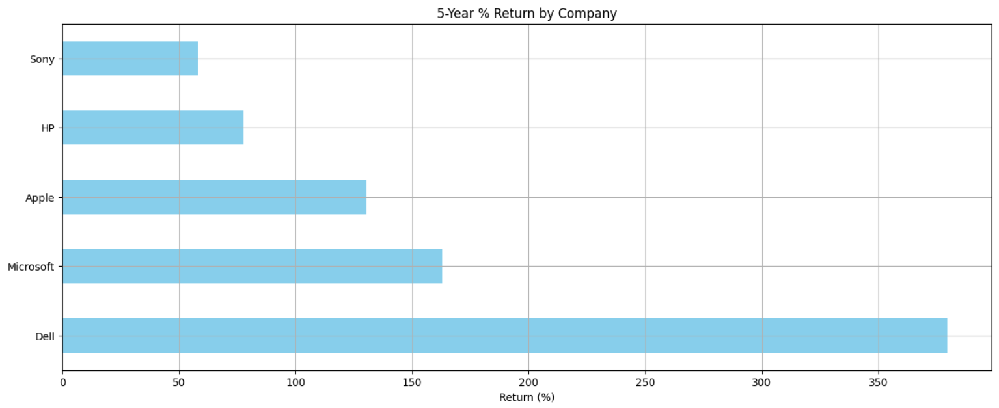
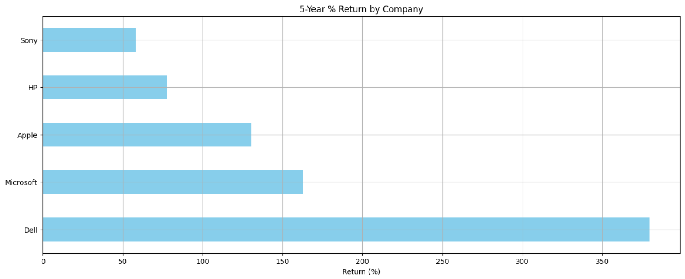

Kanba-DO


 



Purpose
🔹Designed to help individuals and teams visualize and manage tasks dynamically using drag-and-drop Kanban boards.
My Role
🔹Built the entire frontend system, implemented task logic, dynamic drag-and-drop features, and user persistence via local storage.
Value & Outcome
🔹Gives users a clean, intuitive way to track productivity. Designed with workflow usability in mind to support real-time organization and planning.
What I Learned
🔹Improved my skills in state management, UI/UX principles, and planned out features like priority tagging, filtering, and progress tracking for future builds
Purpose
🔹Created to help students make smarter shopping decisions by tracking seasonal price trends and aligning them with personal budgets.
My Role
🔹Designed the system architecture and built the frontend using HTML, CSS, and JavaScript. Developed the logic to filter products by price, category, and purchase timing based on user profiles.
Value & Outcome
🔹Empowers budget-conscious shoppers to identify optimal purchase windows and avoid overspending. Built specifically for students, adaptable to any budget-driven user.
What I Learned
🔹Improved my skills in user profiling, product filtering, and data visualization logic. Strengthened my understanding of how AI and pricing data can drive personalized decisions.
Purpose
🔹A data science project to predict Falcon 9 rocket landing success using machine learning models trained on historical launch data.
My Role
🔹Cleaned and processed SpaceX launch datasets, performed EDA, and implemented models including logistic regression and KNN using Python and Scikit-learn.
Value & Outcome
🔹Provided actionable insights into launch conditions affecting landing success, helping identify performance thresholds for aerospace cost optimization.
What I Learned
🔹Gained experience in end-to-end machine learning workflows, data visualization, and iterative model tuning. Strengthened understanding of how data science can be used in engineering contexts.
Purpose
🔹Analyzed five years of stock performance data for major tech companies (Apple, Microsoft, Dell, HP, and Sony) to uncover trends in returns, volatility, trading volume, and overall investment behavior.
My Role
🔹Collected historical data using Python’s yFinance library, performed financial analysis (SMA, EMA, volatility, correlations), and visualized insights with matplotlib. Exported data to Tableau for interactive dashboard exploration.
Value & Outcome
🔹Identified each company's growth profile and volatility level to assess risk/reward tradeoffs. Highlighted how consistent performers differ from high-return but volatile stocks, helping investors align strategies with performance patterns.
What I Learned
🔹Strengthened skills in time series analysis, financial metrics, and Python-based visualization. Learned how to communicate technical findings through data storytelling and prepare data for cross-platform tools like Tableau.
Purpose
🔹Built a responsive web-based theater seat booking interface to simulate the user journey from seat selection to reservation confirmation.
My Role
🔹Designed the visual layout using HTML, CSS, and Flexbox, implemented dynamic seat generation with JavaScript, and handled interactivity via modals and local storage logic.
Value & Outcome
🔹Created a realistic, interactive front-end booking experience with responsive behavior for both desktop and mobile users, showcasing modular and accessible UI development.
What I Learned
🔹Sharpened front-end skills in DOM manipulation, state handling, responsive design, and user-centered development using JSON, media queries, and event-driven JavaScript.
Purpose
🔹Analyzed social media engagement across post categories to identify trends and optimize content strategies for marketing impact.
My Role
🔹Simulated and cleaned tweet-style data using Python. Performed exploratory data analysis with Pandas, Seaborn, and Matplotlib to uncover engagement patterns.
Value & Outcome
🔹Delivered insights on which post categories like Travel and Fitness consistently gained higher engagement. Helped inform data-driven content decisions.
What I Learned
🔹Strengthened my skills in data cleaning, visualization, and storytelling. Learned how to use simulated data to produce actionable insights in a marketing context.
Purpose
🔹Built a full-stack CRUD web application to manage employees and departments digitally for Apollonia Dental Practice, laying the foundation for workforce management and future expansion.
My Role
🔹Developed backend APIs with Node.js, Express, and MongoDB for employee and department CRUD operations. Created a responsive frontend with dynamic modals and DataTables. Handled data seeding, multi-select departments, and deployed the app using Docker on Render.
Value & Outcome
🔹Delivered a functional employee management system that supports adding, editing (via modal), deleting, and sorting employees by first name, last name, and departments. Enabled seamless data management with cloud deployment for accessibility.
What I Learned
🔹Enhanced skills in full-stack development, REST API design, MongoDB data modeling, frontend dynamic UI with JavaScript, and cloud deployment workflows. Gained experience managing environment variables and continuous deployment on Render.